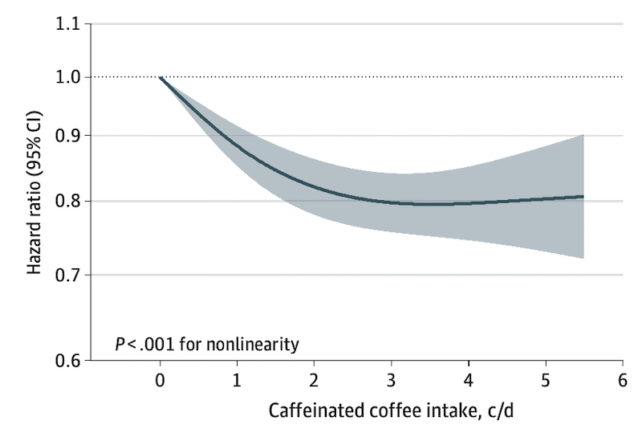
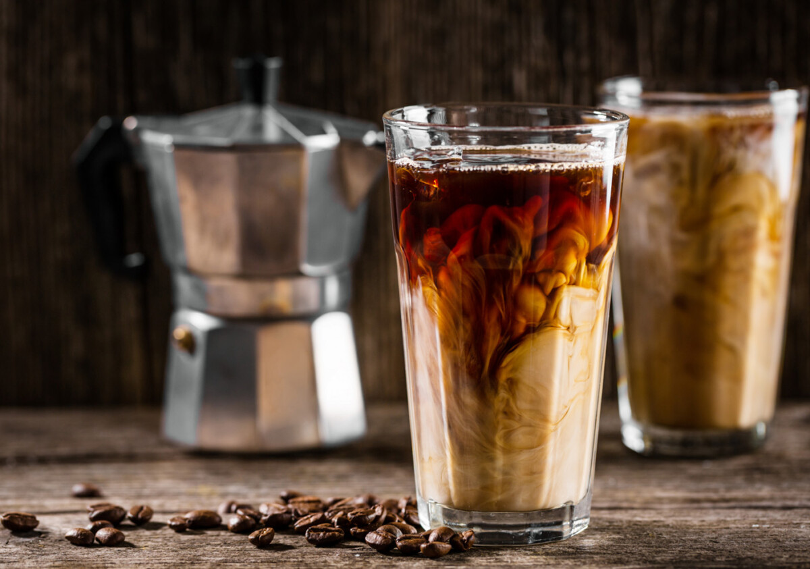
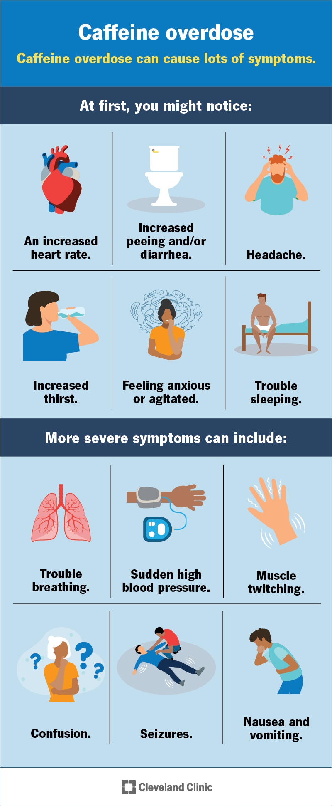
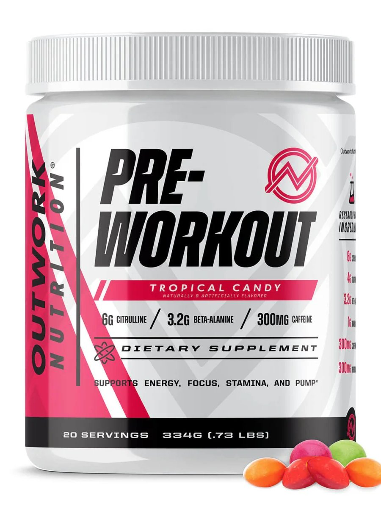

Track intake, calculate half-life, and protect your sleep — all in your browser. No accounts. No tracking. Just data.
Explore All Tools →Most popular calculators and trackers.
Every calculator, tracker, and comparator in one place.
Track daily intake vs FDA limit.
Caffeine clearance by metabolizer type.
Personalized cutoff time.
200mg daily budget by trimester.
Caffeine, sugar, cost comparison.
Personalized taper schedule.

Seattle hit 95°F last Tuesday. I know that doesn't sound like much to people in Phoenix or Dallas. But Seattle is not built for 95 degrees. We don't h...
I used to think caffeine had a six-hour half-life. That was the number I carried in my head, the one that let me drink coffee at 3 PM and tell myself ...

My Caffeine Habit Nearly Sent Me to the ER During Seattle's Hottest June on Record Alex Morgan I was on my third cold brew of the day when the dizzine...

The Monday I Accidentally Drank 600mg of Caffeine Before Noon The pipette did not slip this time. The mistake was much bigger than a smeared calibrati...

That Pre-Workout Powder Has 400mg of Caffeine. And That's Not Even the Worst Part. 400 milligrams. That's what the label said. One scoop. Four hundred...
The first time I noticed it, I was thirty-three. I’d had my usual morning coffee – a 16-ounce pour‑over, about 200 mg of caffeine – and then a second ...